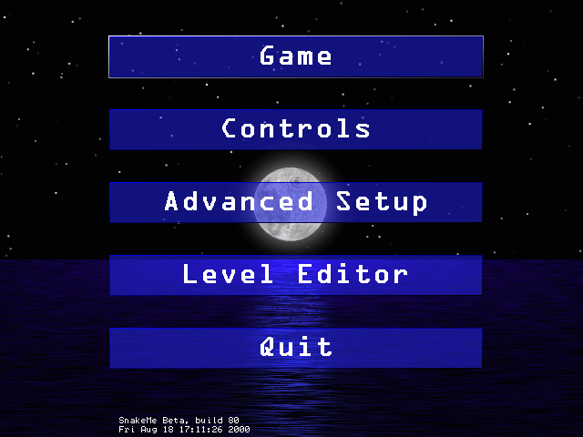
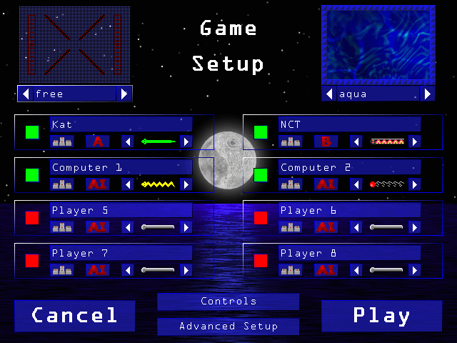
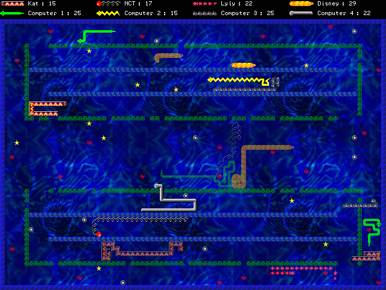
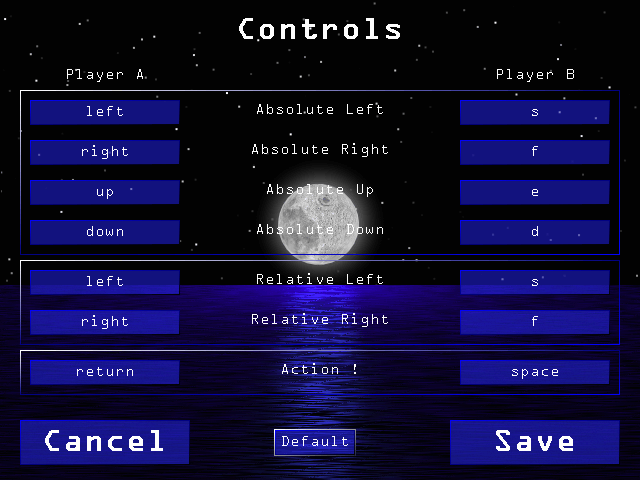
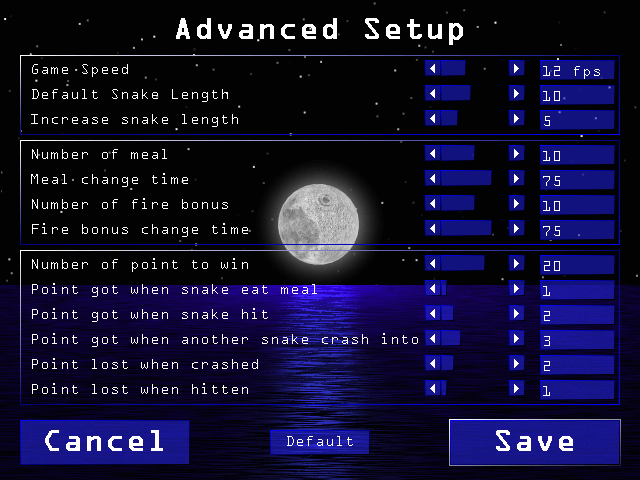
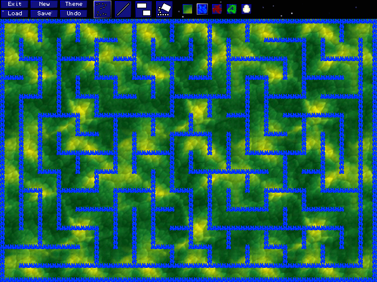

Die grundlegenden Regeln sind sehr einfach. Da ist eine Schlange, welche Äpfel essen soll um zu wachsen und Punkte zu sammeln. Du kannst dieses Spiel auch in vielen Mobiltelephonen und als Free- oder Shareware finden.
Aber, was ist neu und einzigartig an SnakeMe?
Erstens, es ist ein schönes Spiel mit vielen Farben und einem sehr ergonomischen Interface.
Es ist möglich, es alleine oder mit bis zu drei Mitspielern zu spielen. Auch brauchst du keinen Computer für jeden deiner Mitspieler, es ist möglich zwei Spieler an der Tastatur und zwei anderen Spieler können an Gamepads oder Joysticks spielen. Ein Spiel kann man mit maximal 8 Spielern spielen, wenn du also beispielsweise zu zweit spielst, kannst du bis zu 6 Computer-Spieler einbinden.
Du hast ausserdem eine Waffe, aber sei vorsichtig: Du hast nicht viel Munition, du musst diese erst sammeln.
SnakeMe kann man vollständig konfigurieren: du kannst deine Level, deine Schlangen und das Aussehen deiner ausgesuchten Level beeinflussen. Es ist auch möglich, eigene Level zu kreieren mit einem sehr einfach zu bedienendem Level Editor. Falls du eigene Schlangen- und Level-Themes desigenen willst, schau dir das Tool Sprite Editor an, welches mit SnakeMe mitgliefert wird. Du kannst ausserdem Schlangen, Levels, und Level-Themes von unserer Seite herunterladen.
Wenn du Probleme hast, SnakeMe zu starten, gehe in das Verzeichnis wo du SnakeMe installiert hast und doppelklicke auf"SnakeMe.exe".
Die Installation von SnakeMe is sauber und ALLE Dateien sind in dem Verzeichnis das du bei der Installation angegeben hast. Darum kannst du SnakeMe auch deinstallieren, indem du den SnakeMe Ordner manuell löschst.
Geh zum Verzeichnis wo du SnakeMe installiert hast uns starte es.
Lösche das SnakeMe Verzeichnis und die SDL Erweiterungen.
Entpacke die heruntergeladene Datei mit dem Befehl: tar xvzf snakeme.tar.gz
Dann wechsel in das entstandene Verzeichnis: cd snakeme
Starte SnakeMe mit: ./snakeme

Es gibt 5 Knöpfe :

Hier gibt es drei Sektionen :
Erstens am oberen Rand kannst du aussuchen, in welchem Level du startest und welches Level-Theme du benutzt. Benutze die Pfeiltasten um deine Auswahl vorzunehmen. Du kannst jedes Level mit jeden Theme benutzen.
In der Mitte gibt es Konfigurationsboxen für 8 Spieler. In jeder Box kannst du :
Drittens, am unteren Rand, kannst du entweder in Hauptmenü zurückkehren ('Cancel'), das Spiel starten ('Play'), die Kontrollen konfigurieren ('Controls'), oder zu den weitergehenden Optionen gehen ('Advanced Setup') (siehe unten).

Am oberen Bildschrimrand siehst du die Namen und deren Punkte der spielenden Schlangen Falls eine Schlange einen Bonus gesammelt hat, ein kleiner blauer Balken erscheint unter ihrem Namen. Je länger der Balken ist, desto mehr Kugeln hat sie gesammelt.
Wenn eine Schlange die zum Sieg erforderliche Anzahl von Punkten erreicht hat ist das Spiel beendet und ein Bildschrim mit den Punktzahlen der Schlangen erscheint. Drücke ESC, wenn du das Spiel vorzeitig beenden willst.
Wie Punkte gezählt werden wird in den erweiterten Einstellungen festgelegt. Die Schlangen bekommen Punkte indem sie eine Eseensbonus essen, sie eine Kugel in eine andere Schlange schiessen oder eine andere Schlange in sie hineinkriecht. Sie verlieren Punkte, wenn sie von einer Kugel getroffen werden oder sie in irgendetwas hineinkracht.
Viel Spass beim Spielen!

Hier kannst du die Tastaturbelegung für die Schlangensteuerung ändern. Klicke auf eine Knopf und drücke dann den neuen Knopf.
Es gibt zwei Wege, um deine Schlange zu kontrollieren: mit 'absoluten Blick' oder 'relativen Blick'. Mit der absoluten Einstellung bewegt sich die Schlange nach rechts, wenn du nach rechts drückst. Wenn du aber relativ einstellst, dreht sich deine Schlang um 90� gegen den Uhrzeigersinn. Im 'Game Setup' ist ein Knopf, wo man zwischen beiden Modi umschalten kann.
Der 'action' Knopf wird verwendet um die gesammelten Kugel abzuschiessen.

Hier kannst du erweiterte Einstellungen für das Spiel treffen. So kannst du das Spiel personalisieren. Bewege einfach den Balken um deine lieblings Einstellungen zu treffen.
Hier ist eine kleine Erläuterung für jede Einstellung :

Hier kannst due bestehende Level editieren oder neue Level bauen. Der Editor ist sehr einfach zu benutzen, er funktioniert fast wie ein Mal-Programm.
Jedesmal wenn du über einen Knopf fährst ist ein Hilfetext oben rechts, der dir sagt, was der jeweilige Knopf bewirkt.
Oben links sind sechs Knöpfe :
In der oberen Mitte gibt es vier Zeichen-Tools. Das erste zeichnet Punkte, das zweite Linien, das dritte Rechtecke und das letzte füllt Zonen aus.
Oben rechts kannst du aussuchen was du malen willst (nichts, eine unzerstörbare Wand oder eine zerstörbare Wand).
Besuche bitte auch unsere Homepage: stephane.magnenat.net/archives/snakeme (englisch). Du findest dort die letzten Neuigkeiten um SnakeMe und noch viele anderen Dinge wie mehr Schlangen, Level, und Level themes , mit denen due spielen kannst.
Cécile Grivaz, Stéphane Magnenat, Lynda Metref, Gabriel Walt |